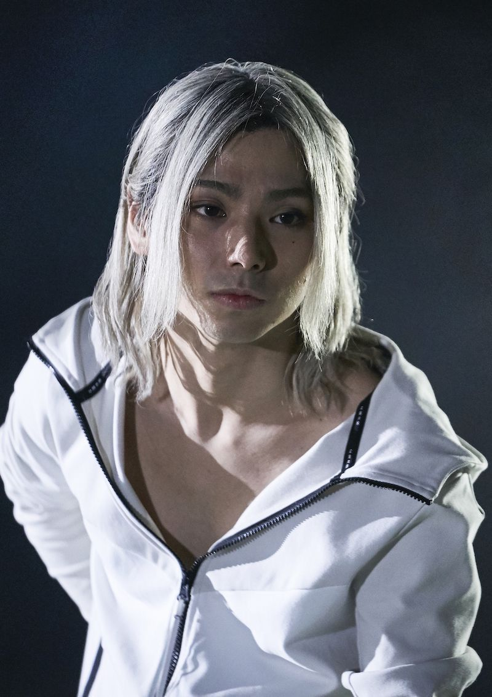
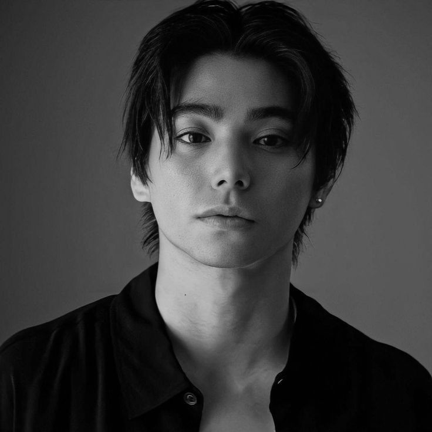

Los personajes mas representativos a lo largo de su carrera.

Personaje muy inteligente, frío y calculador.
Siempre analiza todo antes de actuar.
No confía fácilmente en nadie. Usa más la mente que la fuerza.
Personaje emocional y conflictivo. Tiene un pasado difícil
que afecta sus decisiones. A veces actúa impulsivamente.
Es intenso y algo inestable.
Personaje ligado al mundo criminal. Más serio
y peligroso. Forma parte de un entorno violento.
Muestra un lado más maduro del actor.
Ver mas proyectos
Los mejores trabajos de colección en mi carrera

Es un actor japonés que ha construido una sólida carrera gracias a su talento para dar vida a personajes complejos, logrando reconocimiento tanto a nivel nacional como internacional.
Descargar CVLos mejores contenido de mi blog personal
Nijiro Murakami es un actor japonés reconocido por su capacidad para interpretar personajes complejos y diferentes, destacando tanto en series como en películas.
Personaje de Alice in Borderland, conocido por su inteligencia y personalidad fría. Destaca por su forma estratégica de actuar en situaciones extremas.
Personaje de Tokyo Revengers con una personalidad intensa y emocional. Su historia refleja conflictos internos y decisiones impulsivas.
Personaje de Last of the Wolves, vinculado al mundo criminal. Representa un papel más serio y maduro dentro de su carrera.